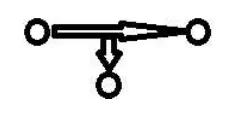

El Santo Resumen
Seguridad en los Sistemas de Información
Ingeniería en Sistemas, UTN
Qué tiene
De dónde sale
Resumen armado solo con cinco exámenes del campus que hay en el Drive de UTN (2024 y 2025). El Drive no trae apuntes ni programa. Si el programa cambió, manda la cátedra.
Los quiz, los ejercicios de examen y las figuras que se mueven están en la web.
Seguridad en los Sistemas de Información
Para entender
Cómo se protege la información de una organización, cómo se atacan sus sistemas y cómo sigue funcionando cuando algo sale mal.
Resumen no juzgado. Todavía nadie evaluó si alcanza para estudiar solo con esto.
Este resumen sale solo de cinco exámenes
El Drive no trae apuntes, ni programa, ni un final. Trae cinco parciales del campus, de 2024 y 2025. Todo lo de acá sale de ahí. Si un tema no apareció en esos cinco, no está. Conseguí los apuntes de tu comisión para lo demás.
La idea general
La materia mira la seguridad desde dos lados. Por un lado está la gestión, con normas, políticas y responsables. Por el otro está la técnica, con redes, cifrado, ataques y herramientas.
Cada parcial se rinde en dos cuestionarios separados, y cada uno cae más de un lado.
| Teoría: la gestión | Práctica: la técnica | |
|---|---|---|
| 1° parcial | Seguridad de la información, SGSI e ISO 27001, políticas, normas y procedimientos, modelos de ataque | Vulnerabilidad y amenaza, malware, criptografía, redes, firewall, VPN y DMZ |
| 2° parcial | Continuidad del negocio con ISO 22301 | Pentesting, hardening, móviles, herramientas de Kali, políticas de seguridad |
El recorrido
- Qué se protege y de qué. Activos, vulnerabilidades, amenazas, incidentes.
- Cómo se defiende lo técnico. Cifrado, segmentación, firewall, VPN.
- Cómo se organiza la defensa. Un SGSI, sus políticas y su documentación.
- Cómo se prueba la defensa. Pentesting, con sus fases y sus herramientas, y hardening para cerrar lo que aparece.
- Qué pasa si igual falla. Continuidad del negocio: seguir entregando durante una disrupción.
La pregunta se va moviendo. Primero es «¿qué me puede pasar?». Después, «¿cómo lo evito?». Después, «¿lo evité de verdad?». Al final, «¿y si pasa igual?».
Cómo se evalúa
Son cuestionarios del campus virtual. Los cinco que hay en el Drive tienen 20 preguntas de opción múltiple. Algunas piden marcar dos o tres opciones.
| Examen | Fecha | Puntaje de cada pregunta |
|---|---|---|
| 1° parcial, práctica | 27/09/2024 | 0,50 de 10 |
| 1° parcial, teoría | 03/10/2024 | 0,50 de 10 |
| 2° parcial, práctica | 08/11/2024 | 0,50 de 10 |
| 2° parcial, teoría | 06/11/2025 | 1 de 20, y la nota es sobre 10 |
| 2° parcial, práctica | 07/11/2025 | 0,50 de 10 |
Esos intentos duraron entre 12 y 20 minutos. Las capturas no dicen cuál era el tiempo límite.
Entre las dos prácticas del 2° parcial hay 4 preguntas iguales: objetivo del pentesting, qué no se evalúa, la fase de gathering y qué sabe el auditor en caja negra. Es poca muestra, pero vale la pena estudiar esas consignas al pie de la letra.
De dónde salen las respuestas
Las hojas del Drive son capturas de la revisión de un intento en el campus. Abajo de cada pregunta, el campus muestra «La respuesta correcta es». Esa corrección automática es la de la cátedra, y las respuestas de este resumen son esas. Cada una cita examen, pregunta y página. Lo que marcó el alumno en esa captura no cuenta.
Estudiá la respuesta que marca el campus
Alguna puede sonarte distinta de lo que leíste en otro lado. Por ejemplo, la definición de política prudente. Acá va lo que marcó la cátedra, sin corregirlo. Las capturas casi nunca explican el porqué. Si una respuesta no te cierra, preguntá en tu comisión.
Cómo usar esto
- 1° parcial y 2° parcial: leé cada tema. Las preguntas se abren para ver la respuesta, y al final de cada página hay un quiz.
- Ejercicios: las consignas de los cinco exámenes para probarte, con la corrección del campus como resolución. Los enlaces al Drive muestran las respuestas y lo que marcó un alumno. Ahí, lo del alumno no vale.
- Hoja de repaso: todo junto para la última pasada.
En la misma sección del campus, las capturas muestran enlaces a «bases de criptografía», «modelo de primer parcial teoría» y «paso a paso windows server (dhcp-dns-ad) - 2023». Ninguno está en el Drive. Si tenés acceso al campus, buscalos.
Seguridad en los Sistemas de Información
1° parcial
Práctica: vulnerabilidad y amenaza, malware, criptografía y redes. Teoría: seguridad de la información, SGSI, políticas y modelos de ataque.
Resumen no juzgado. Todavía nadie evaluó si alcanza para estudiar solo con esto.
Cómo viene el examen
Son dos cuestionarios del campus, de 20 preguntas cada uno a 0,50 puntos. Solo hay uno de cada parte, los dos de 2024: la práctica del 27/09/2024 y la teoría del 03/10/2024. Con dos exámenes no se puede decir qué se repite año a año.
De dónde sale cada respuesta
De lo que marca el campus al revisar el intento, con examen, pregunta y página. El Drive no trae apuntes que lo expliquen. Lo marcado «En criollo» es una ayuda para entender y no sale del material.
Parte práctica
Lo que sigue, hasta la parte teórica, salió de la práctica del 27/09/2024. Algunos datos se completan con la práctica del 2° parcial, y cada uno lo aclara.
Vulnerabilidad, amenaza e ingeniería social
- Vulnerabilidad: la debilidad en el software o en el hardware que permite su ataque.
- Amenaza: cualquier acción que explota una vulnerabilidad informática para comprometer un sistema de información.
- Ingeniería social: las diferentes técnicas de manipulación que usan los ciberdelincuentes para obtener información confidencial de los usuarios.
- El eslabón más débil en seguridad: los usuarios.
Fuente: 1° parcial práctica 27/09/2024, preguntas 2 y 1 (página 1), 3 (página 2) y 10 (página 5), respuesta del campus.
En criollo
La vulnerabilidad es la ventana que quedó sin traba. La amenaza es la acción de quien entra por ahí.
Un analista capacita al personal cada semestre, pone acceso biométrico en el datacenter, actualiza sistemas operativos y configura antivirus, pero diagrama la red completa evitando segmentarla. ¿Qué tipo de vulnerabilidad sufre la organización?1° parcial práctica, 27/09/2024
Red. Las opciones eran humana, física, software y red. Fuente: 1° parcial práctica 27/09/2024, pregunta 8, página 4, respuesta del campus.
Malware y ataques
- Ransomware: el malware diseñado para cifrar archivos y sitios web y exigir un rescate económico a cambio de liberar la información.
- DDoS, objetivo principal: sobrecargar la capacidad de una máquina objetivo.
- Contra el malware ayudan: actualizar con regularidad el sistema operativo y las aplicaciones, no usar perfil de administrador en el trabajo diario y suscribirse a boletines de seguridad. Facilitar datos personales por correo, como claves, es la opción que no ayuda.
Fuente: 1° parcial práctica 27/09/2024, preguntas 6 (página 3), 9 (página 4) y 13 (página 6), respuesta del campus.
Criptografía
- Algoritmos de cifrado simétrico más utilizados: AES, DES y 3DES.
- Modo de trabajo de la asimétrica: el emisor encripta con la clave pública del receptor y se desencripta con la clave privada del receptor.
- Para cifrar un mensaje con RSA necesitás: la clave pública del receptor.
- Comparación: la simétrica es más veloz que la asimétrica. Las claves de la asimétrica suelen ser más largas.
Fuente: 1° parcial práctica 27/09/2024, preguntas 5 (página 2), 11 (página 5) y 19 (página 8). 2° parcial práctica 08/11/2024, pregunta 18, página 7. Respuesta del campus.
La clave pública no descifra
Se pidió marcar la afirmación falsa entre tres. La falsa era «las claves públicas se utilizan para descifrar los mensajes enviados cuando se utiliza la criptografía asimétrica». Las otras dos son las de la comparación de arriba. Fuente: 1° parcial práctica 27/09/2024, pregunta 5, página 2, respuesta del campus.
En criollo
Pensá en un buzón. Cualquiera puede meter una carta por la ranura, y esa es la clave pública. Solo el dueño tiene la llave para abrirlo, y esa es la privada. Por eso se cifra con la pública de quien recibe.
Con el cifrado César (ROT-3), descifrar el mensaje «Ho fliudgr Fhvdu qr hv frpsolfdgr gh ghvfliudu»1° parcial práctica, 27/09/2024
«El cifrado Cesar no es complicado de descifrar». Las otras dos opciones cambian una sola palabra, así que hay que mirar el mensaje entero. Fuente: 1° parcial práctica 27/09/2024, pregunta 7, página 3, respuesta del campus.
En criollo
ROT-3 corre cada letra tres lugares en el alfabeto. Para descifrar, la corrés tres lugares para atrás.
Redes, firewall, VPN y DMZ
- Funciones del firewall: filtrar el tráfico malicioso, proteger contra ataques de red y controlar el acceso a recursos. Detectar y eliminar virus no fue la opción correcta.
- ACL más segura y eficiente en un firewall: denegar por defecto (Deny any). Se bloquea todo el tráfico a menos que una regla lo permita.
- DMZ: una subred física o lógica que expone los servicios externos de una organización a una red no confiable, como Internet.
- Sucursal conectada por VPN a la casa central: VPN de sitio a sitio. Las otras opciones eran de acceso remoto y para clientes o servicios en la nube.
- Herramienta para modelar el segmentado de red: Cisco Packet Tracer. Las otras opciones eran Wireshark, Nessus e Hydra.
Fuente: 1° parcial práctica 27/09/2024, preguntas 4 (página 2), 14 y 15 (página 6), 16 y 18 (página 7), respuesta del campus.
- DNS es de la capa de aplicación y se utiliza para la resolución de nombres de dominio.
- FTP es de la capa de aplicación y se utiliza para la transferencia de archivos.
- Capas del modelo TCP/IP: acceso a red, Internet, transporte y aplicación. Esta pregunta salió igual en los dos exámenes.
Fuente: 1° parcial práctica 27/09/2024, preguntas 17 (página 7) y 20 (página 8). 2° parcial práctica 08/11/2024, preguntas 4 (página 2) y 14 (página 6). Respuesta del campus.
Parte teórica
Lo que sigue salió de la teoría del 03/10/2024.
Seguridad de la información
- Incidente de seguridad: cualquier evento adverso relacionado con la seguridad.
- Qué protege la seguridad de la información: recursos, sistemas e información. La opción correcta era «todas las anteriores».
- Su objetivo: minimizar la posibilidad de ocurrencia de los riesgos. La opción «evitar que los riesgos ocurran» no era la correcta.
- Integridad: que la información se mantiene precisa y completa.
- Autenticación de usuarios: se relaciona con la verificación de la identidad de los usuarios.
- Medida para garantizar la confidencialidad: el uso de encriptado.
- Objetivo principal de la autenticación multifactor: proteger la información mediante múltiples capas de seguridad.
Fuente: 1° parcial teoría 03/10/2024, preguntas 1 y 2 (página 1), 5 (página 3), 11, 12 y 13 (página 6) y 15 (página 7), respuesta del campus.
Integridad no es confidencialidad
En la pregunta de integridad, «que la información está protegida contra accesos no autorizados» estaba entre las opciones y no era la correcta. Fuente: 1° parcial teoría 03/10/2024, pregunta 15, página 7, respuesta del campus.
SGSI e ISO 27001
- Adoptar un SGSI: es una decisión estratégica de la organización.
- Alcance (scope) al planificar un SGSI: define qué procesos serán asegurados por el SGSI. Personas, tecnologías y tiempo eran las otras opciones.
- Modelo de mejora continua que adopta ISO 27001: modelo PHVA. Tiene cuatro etapas y se conoce por sus iniciales.
- Ventaja clave de implementar un SGSI: reducir el riesgo y el tiempo de respuesta ante incidentes de seguridad.
Fuente: 1° parcial teoría 03/10/2024, preguntas 6 (página 3), 7 (página 4), 9 (página 5) y 17 (página 8), respuesta del campus.
Se pidió elegir las dos mejores prácticas para protegerlos. El campus marca estas:
- Hacer un inventario de todos los activos.
- Por cada activo, designar un responsable por el mantenimiento de su seguridad.
Fuente: 1° parcial teoría 03/10/2024, pregunta 8, página 4, respuesta del campus.
Políticas, normas y procedimientos
- Aprobación de la política de seguridad: requiere el aval y apoyo primario de los líderes de la organización.
- Rol de la alta gerencia: definir los objetivos y la estrategia de seguridad.
- Normas: responden a «qué» hacer para alcanzar las directrices definidas en la política de seguridad. Son las reglas básicas de cómo debe implementarse el control o conjunto de controles definidos en las políticas.
- Procedimientos: determinan «cómo» y «quién» se debe hacer.
- Nivel de planeación de los procedimientos: táctico.
Fuente: 1° parcial teoría 03/10/2024, preguntas 3 y 4 (página 2), 10 (página 5), 14 y 16 (página 7), respuesta del campus.
En criollo
La norma te dice qué hay que hacer. El procedimiento te dice cómo se hace y quién lo hace.
Lo que falta de este tema
Las opciones nombran instructivos, estándares, evidencias y los niveles estratégico y operacional. Los exámenes no dicen qué es cada uno. Tampoco dicen con qué nivel van las políticas o las normas. Buscalo en el material de tu comisión.
Ataques y sus modelos
Un ataque basado en escuchar y monitorear las transmisiones se denomina ataque pasivo. Fuente: 1° parcial teoría 03/10/2024, pregunta 18, página 8, respuesta del campus.
Se mostró un dibujo y se pidió el modelo de ataque. Las opciones eran intercepción, interrupción, modificación y fabricación.
Este dibujo es interrupción.

Este dibujo es intercepción.
Fuente: 1° parcial teoría 03/10/2024, preguntas 19 y 20, página 9, respuesta del campus.
En criollo
En el primer dibujo el mensaje se corta y no llega. En el segundo llega, pero un tercero se lleva una copia.
Modificación y fabricación
Eran opciones, pero no hay un dibujo ni una definición de ellas en los exámenes. Puede salir el gráfico que no viste. Buscalos en el material de tu comisión.
Seguridad en los Sistemas de Información
2° parcial
Teoría: continuidad del negocio con ISO 22301. Práctica: pentesting, hardening, móviles, herramientas y políticas de seguridad.
Resumen no juzgado. Todavía nadie evaluó si alcanza para estudiar solo con esto.
Cómo viene el examen
Son dos cuestionarios del campus, de 20 preguntas cada uno. Hay tres en el Drive.
- Teoría: una sola, del 06/11/2025. Las 20 preguntas son de ISO 22301 y del sistema de gestión de la continuidad (SGCN). Cada una vale 1 punto sobre 20.
- Práctica: dos, del 08/11/2024 y del 07/11/2025. Cada pregunta vale 0,50 puntos.
Cuatro preguntas salieron iguales, con las opciones en otro orden. Son el objetivo principal del pentesting, el elemento que no se evalúa, la fase de gathering y qué sabe el auditor en caja negra. Las cuatro están abajo.
De dónde sale cada respuesta
De lo que marca el campus al revisar el intento, con examen, pregunta y página. El Drive no trae la norma ni apuntes. Lo marcado «En criollo» es una ayuda para entender y no sale del material.
Parte teórica: continuidad del negocio
Lo que sigue, hasta la parte práctica, salió de la teoría del 06/11/2025.
Qué es la continuidad
- Continuidad del negocio (business continuity): capacidad de una organización para continuar la entrega de productos y servicios dentro de plazos aceptables a una capacidad predefinida durante una disrupción.
- Gestión de la continuidad de negocio: proceso holístico de gestión que identifica amenazas potenciales y el impacto que esas amenazas pueden causar, proporcionando un marco para crear resiliencia organizativa con capacidad de respuesta eficaz.
Fuente: 2° parcial teoría 06/11/2025, preguntas 4 (página 2) y 13 (página 7), respuesta del campus.
En criollo
La continuidad es poder seguir atendiendo mientras algo está roto. La gestión es el trabajo de prepararse para poder hacerlo.
La norma de continuidad se centra en el «qué pasaría si» y en la capacidad de identificar y planificar posibles impactos y riesgos para la empresa. Fuente: 2° parcial teoría 06/11/2025, pregunta 6, página 3, respuesta del campus.
El ciclo PDCA
La fase de «Actuar» es tomar medidas cuando sea necesario, basándose en el seguimiento, la medición y otros factores que impulsen la acción.
La cláusula 8 (Operación) abarca principalmente la etapa de Hacer (implementar y operar).
Las consignas rotulan las otras fases así:
| Fase | Cómo la escribe la consigna |
|---|---|
| Planificar | Establecer los objetivos y los recursos necesarios |
| Hacer | Aplicar lo planificado. Implementar y operar |
| Verificar | Supervisar y medir la eficacia. Monitorear y revisar |
| Actuar | Mantener y mejorar |
Fuente: 2° parcial teoría 06/11/2025, preguntas 14 (página 7) y 16 (página 8), respuesta y opciones del campus.
Lo que pide cada cláusula
| Cláusula | Lo que marca el campus | Pregunta y página |
|---|---|---|
| 4.2.2 | Implementar y mantener un proceso para identificar, tener acceso y evaluar los requisitos legales y regulatorios aplicables | 1, pág. 1 |
| 4.3 Alcance | Los alcances documentados describen los procesos, actividades, productos o servicios internos y externos incluidos (o no incluidos) | 20, pág. 10 |
| 5.1 Liderazgo | La alta dirección demuestra compromiso asegurando la integración de los requisitos del SGCN en los procesos de negocio y garantizando que cuenta con los recursos adecuados | 11, pág. 6, y 19, pág. 10 |
| 6.1 Planificación | Sus riesgos y oportunidades se relacionan con la eficacia del sistema de gestión | 3, pág. 2 |
| 7.3 Concienciación | El personal debe ser consciente de la política del SGCN, su contribución a la eficacia del sistema, y sus roles antes, durante y después de las disrupciones, y de las implicaciones de no cumplir con los requisitos del SGCN | 2, pág. 1, y 10, pág. 5 |
| 7.5 Información documentada | El acceso se controla para que no pueda modificarse, corromperse, borrarse o ser consultada por personas a las que no corresponda | 12, pág. 6 |
| 8.1 Control operacional | Los procesos subcontratados y la cadena de suministro deben ser controlados | 5, pág. 3 |
| 8.2.3 Evaluación de riesgos | Sus riesgos se relacionan con la disrupción de las actividades del negocio | 3, pág. 2 |
Fuente: 2° parcial teoría 06/11/2025, las preguntas de la tabla, respuesta del campus. La frase de 8.2.3 está en la consigna de la pregunta 3. Las preguntas 2 y 19 no nombran su cláusula. Van en esa fila porque piden lo mismo que la 10 y la 11.
Dos clases de riesgo
La 8.2.3 mira los riesgos del negocio. La 6.1 mira los riesgos del propio sistema de gestión. Eso es justo lo que pide la pregunta 3. Fuente: 2° parcial teoría 06/11/2025, pregunta 3, página 2, consigna y respuesta del campus.
- Política de continuidad. Además de dar un marco para establecer objetivos, debe incluir el compromiso de cumplir los requisitos aplicables y el compromiso de mejora continua.
- Cambios en el SGCN. Además del propósito, las consecuencias potenciales y la disponibilidad de recursos, hay que considerar la integridad del SGCN.
- Proveedores de alto riesgo. Asegurarse de que aplican controles al menos tan buenos como los de la organización, o buscar alternativas.
Fuente: 2° parcial teoría 06/11/2025, preguntas 8 (página 4), 17 y 18 (página 9), respuesta del campus.
Estrategias y soluciones
La selección de estrategias y soluciones se basa en estas cosas:
- La medida en que cumplen con los requisitos para continuar y recuperar las actividades prioritarias.
- Reducir la probabilidad y la duración de las perturbaciones.
- Los costos y beneficios asociados.
- La cantidad y el tipo de riesgo que la organización puede o no asumir.
- La propensión al riesgo, que la pregunta 7 nombra como otra base de selección.
Fuente: 2° parcial teoría 06/11/2025, preguntas 7 (página 4) y 9 (página 5), respuesta y consigna del campus.
El análisis de impacto (BIA)
El Objetivo de Tiempo de Recuperación (RTO) es el período de tiempo tras un incidente en el que se reanuda un producto o servicio o una actividad, o se recuperan los recursos. Fuente: 2° parcial teoría 06/11/2025, pregunta 15, página 8, respuesta del campus.
Las opciones de esa pregunta y de la 13 traen otras siglas con su definición. No fueron la respuesta pedida, pero sirven para no confundirlas.
| Sigla | Cómo la describe la opción |
|---|---|
| PMPT | El tiempo máximo tolerable antes de que el impacto adverso sea inaceptable. Otra opción lo nombra Periodo Máximo de Interrupción Tolerable |
| MBCO | El nivel mínimo de servicios que una organización debe mantener tras una interrupción |
Otra opción de la pregunta 15 habla del «punto hasta el que se restablece la información utilizada», sin darle nombre.
En criollo
El RTO mide en cuánto tiempo volvés. El PMPT mide cuánto aguantás sin volver. El MBCO mide con qué nivel mínimo de servicio tenés que seguir.
Parte práctica: pentesting y hardening
Lo que sigue salió de las prácticas del 08/11/2024 y del 07/11/2025.
Qué es el pentesting
- Objetivo principal: encontrar y prevenir fallos de seguridad. «Mejorar la seguridad de la empresa» estaba entre las opciones y no era la marcada. Salió en los dos años.
- Qué no se evalúa en un pentest: la velocidad de procesamiento. Salió en los dos años.
- Qué lo diferencia de una evaluación de vulnerabilidades: intenta explotar las vulnerabilidades encontradas.
- Como método: es la simulación de ataques controlados para identificar fallos.
Fuente: 2° parcial práctica 08/11/2024, preguntas 7 (página 3), 10 (página 4) y 12 (página 5). 2° parcial práctica 07/11/2025, preguntas 11 y 13 (página 6). 1° parcial práctica 27/09/2024, pregunta 12, página 5. Respuesta del campus.
Los tipos de caja
| Tipo | Lo que marca el campus | Pregunta |
|---|---|---|
| Caja negra | No tiene información previa sobre el sistema. Es la más realista en términos de ataque externo | 2024: 2 (pág. 1) y 15 (pág. 6). 2025: 16 (pág. 8) |
| Caja blanca | Permite al auditor conocer toda la información del sistema. Es la considerada más completa | 2024: 8 (pág. 4). 2025: 12 (pág. 6) |
| Caja gris | Evalúa desde el punto de vista de un usuario interno o un atacante con acceso limitado | 2025: 17 (pág. 8) |
Caja azul aparece como opción en varias preguntas y nunca fue la marcada. Fuente: los dos exámenes de la tabla, respuesta del campus.
Realista no es lo mismo que completa
Caja negra es la más realista. Caja blanca es la más completa. Los dos superlativos se preguntaron por separado, en exámenes distintos. Fuente: 2° parcial práctica 08/11/2024, pregunta 2, página 1, y 07/11/2025, pregunta 12, página 6, respuesta del campus.
Se muestra una captura de Kali con un comando de Hydra contra un servicio FTP. Según el comando, ¿qué tipo de pentesting se está realizando?2° parcial práctica, 07/11/2025
Grey Box. El campus no explica el motivo. Mirá la captura en Ejercicios. Fuente: 2° parcial práctica 07/11/2025, pregunta 3, página 2, respuesta del campus.
Las fases
- Gathering o recolección de información: se recopila toda la información posible sobre los sistemas, redes, software, hardware y otras fuentes externas, como metadatos y redes sociales. Salió en los dos años.
- Análisis de vulnerabilidades: entran en juego la combinación de factores como herramientas de hacking, experiencia y astucia del auditor.
- Acceso al sistema: el auditor organiza los ataques y mantiene el acceso al objetivo.
- Generación de informes: es la fase final del white hat.
Fuente: 2° parcial práctica 08/11/2024, preguntas 1 (página 1) y 13 (página 5). 2° parcial práctica 07/11/2025, preguntas 5 (página 3), 8 (página 5) y 14 (página 7). Respuesta del campus.
Astucia es análisis, no explotación
En la consigna de la astucia del auditor, «explotación de vulnerabilidades» era opción y no era la correcta. Fuente: 2° parcial práctica 07/11/2025, pregunta 8, página 5, respuesta del campus.
- Fases que se reemplazan cuando las hace un black o grey hat: definición de reglas y límites, y generación de informes.
- Con qué reemplaza el black hat la generación de informes: mantener acceso y borrador de huellas.
Fuente: 2° parcial práctica 07/11/2025, preguntas 5 (página 3) y 7 (página 4), respuesta del campus.
El orden de las fases
Ningún examen da la lista completa ni el orden, solo que el informe es la fase final. Buscá la lista en el material de tu comisión.
Vulnerabilidades, amenazas y ataques
- Vulnerabilidad por políticas de seguridad deficientes: es de tipo diseño. Las otras opciones eran uso e implementación.
- Las tres principales categorías de amenazas en los sistemas: amenazas en la red, amenazas en los sistemas y amenazas en las aplicaciones.
Fuente: 2° parcial práctica 08/11/2024, preguntas 3 (página 2) y 11 (página 5), respuesta del campus.
- Ingeniería social: manipulación psicológica para persuadir a la víctima de que revele credenciales u otra información, por conversaciones, correos o llamadas, sin software malicioso.
- Phishing: el atacante se hace pasar por una entidad legítima para obtener información confidencial. Lo más común es enviar correos o mensajes que aparentan ser de una fuente confiable.
- DDoS: realizar peticiones de acceso a una página web desde muchos servidores al mismo tiempo.
Fuente: 2° parcial práctica 08/11/2024, preguntas 5 y 6 (página 3) y 19 (página 7), respuesta del campus.
Hardening
- Hardening: implementar configuraciones adicionales para mejorar la seguridad y reducir las vulnerabilidades de un sistema.
- Ejemplo que entra en el concepto: deshabilitación de dispositivos ópticos, USB o similares.
- Tres puntos del hardening en un host Windows: directiva de contraseña, activar firewall de Windows e instalar antivirus.
Fuente: 2° parcial práctica 07/11/2025, preguntas 4 (página 3), 18 y 19 (página 9), respuesta del campus.
Las tres de Windows
Había seis opciones. Configurar IP fija, cambiar el usuario administrador por estándar y crear listas de acceso en el firewall no estaban marcadas. Fuente: 2° parcial práctica 07/11/2025, pregunta 19, página 9, respuesta del campus.
Móviles
- Capas de la arquitectura interna de Android: aplicación, framework de aplicación, librerías y Linux Kernel. Los atacantes pueden escalar desde la capa de aplicación hasta el kernel para obtener control total.
- Jailbreaking en iOS: es el proceso de romper la seguridad del sistema para obtener privilegios root. Se considera complejo porque el kernel está cifrado y el sistema es cerrado.
Fuente: 2° parcial práctica 07/11/2025, preguntas 2 (página 2) y 15 (página 7), respuesta del campus.
Herramientas
| Herramienta | Lo que marca el campus | Pregunta |
|---|---|---|
| Kali | Distribución completa de Linux especializada en auditoría de seguridad | 2024: 17, pág. 7 |
| Metasploit | Para simular ataques y realizar pruebas de penetración en sistemas | 2025: 9, pág. 5 |
| John the Ripper | Descifrar contraseñas sin conexión | 2024: 16, pág. 6 |
Fuente: los dos exámenes de la tabla, respuesta del campus.
Durante tareas de pentesting se detectó un parámetro cat vulnerable. ¿Qué herramienta se utilizó para encontrar esta falla?2° parcial práctica, 07/11/2025
Sqlmap. Las otras opciones eran Nikto, Nessus y Nmap. Fuente: 2° parcial práctica 07/11/2025, pregunta 10, página 5, respuesta del campus.
En una salida de Nikto sobre un host, ¿cuál de las vulnerabilidades detectadas es de severidad alta?2° parcial práctica, 07/11/2025
wp-config.php accesible. Las otras opciones eran cabeceras y versión de Apache expuestas, y phpinfo() accesible. Fuente: 2° parcial práctica 07/11/2025, pregunta 6, página 4, respuesta del campus.
Según una salida de Nmap con el puerto 22/tcp abierto y el nombre del servicio oculto, ¿qué comando se puede usar para intentar conectarse al equipo?2° parcial práctica, 07/11/2025
ssh seguido de la IP del equipo. Las otras opciones eran tcp y ftp. Fuente: 2° parcial práctica 07/11/2025, pregunta 20, página 10, respuesta del campus.
Políticas de seguridad y ubicación del firewall
- Política promiscua: no establece restricciones de acceso a los recursos del sistema.
- Política prudente: es un grado de política de seguridad alto donde los recursos están limitados exclusivamente a las personas más imprescindibles.
Fuente: 2° parcial práctica 08/11/2024, pregunta 20, página 8. 2° parcial práctica 07/11/2025, pregunta 1, página 1. Respuesta del campus.
La prudente, no la extrema
En esa definición, «política extrema» era una opción y no era la correcta. Permisiva también aparece como opción, sin definición en ningún examen. Fuente: 2° parcial práctica 07/11/2025, pregunta 1, página 1, respuesta del campus.
Tenés que instalar un firewall dedicado para monitorear y controlar el tráfico entrante y saliente. ¿Dónde debería ir?2° parcial práctica, 08/11/2024
Entre el módem del proveedor de internet y el router. Fuente: 2° parcial práctica 08/11/2024, pregunta 9, página 4, respuesta del campus.